Cách chọn đồng hồ nam theo cổ tay và ngân sách
Bắt đầu từ ngân sách, hoàn cảnh sử dụng và kích cỡ cổ tay, sau đó mới đến kiểu dáng.
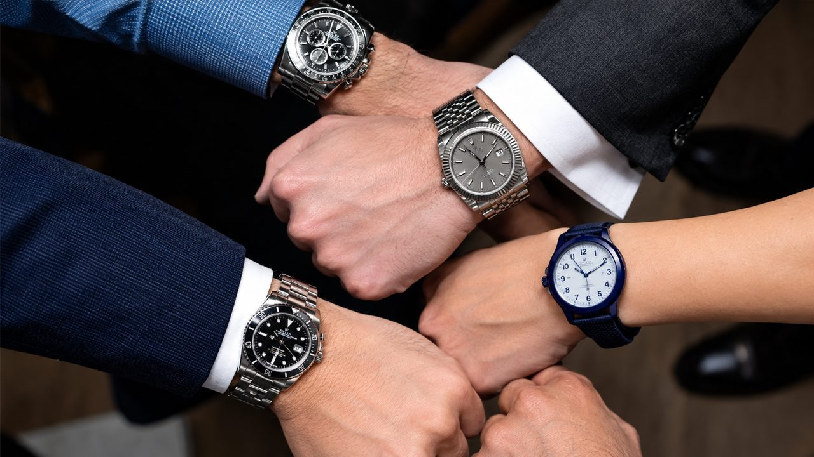
Chọn đồng hồ nam không nên bắt đầu từ kiểu dáng. Hãy trả lời ba câu hỏi trước: bạn đeo nó khi nào, cổ tay bạn cỡ nào và bạn sẵn sàng chi bao nhiêu. Sau ba câu trả lời đó, danh sách mẫu phù hợp sẽ thu hẹp rất nhanh.
Bước 1: Xác định nhu cầu và phong cách
Mỗi chiếc đồng hồ phục vụ một nhu cầu khác nhau: có chiếc sinh ra để đi làm, có chiếc dành cho vận động, có chiếc chủ yếu để thể hiện gu. Hãy xác định bạn sẽ đeo nó nhiều nhất ở đâu:
- Công sở, gặp khách: mặt tròn gọn, màu trung tính. Dây da cho cảm giác lịch sự, dây kim loại cho cảm giác mạnh mẽ, nam tính.
- Thể thao, hoạt động ngoài trời: ưu tiên độ bền, chịu va đập và chống nước.
- Hằng ngày, thể hiện cá tính: chọn theo gu, nhưng vẫn phải vừa cổ tay (xem bước 2).
Nếu bạn thích vẻ ngoài bụi bặm, cá tính mạnh mẽ, dòng G-Shock của Casio là lựa chọn quen thuộc. Ba mẫu thường được nhắc đến là GA-2100-1A1, GA-B2100CD-1A4 và GM-2100MG-1A:
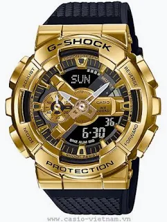
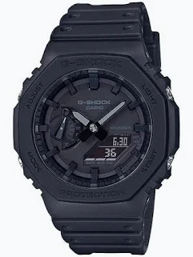
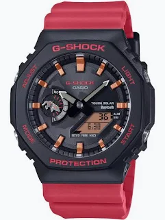
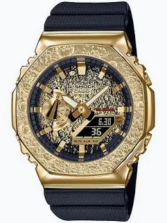
Bước 2: Chọn size mặt theo cổ tay
Nam giới thường có cổ tay lớn hơn nữ, nên mặt đồng hồ nam phổ biến ở khoảng 38–42 mm. Một số mốc để bạn hình dung:
- Cổ tay nhỏ (chu vi dưới 16 cm): mặt khoảng 36–38 mm.
- Cổ tay trung bình: mặt khoảng 38–42 mm.
- Cổ tay lớn: mặt 42–44 mm, có thể lên tới 45 mm.
Cách đo: dùng thước dây mềm quấn một vòng quanh cổ tay, ngay dưới xương cổ tay, không siết quá chặt cũng không để quá lỏng, rồi đọc số đo theo cm. Nếu mua trực tiếp, hãy đeo thử xem mặt có quá to hay quá nhỏ. Nếu mua làm quà, hãy hỏi trước hoặc ước chừng cổ tay người nhận. Bảng quy đổi chi tiết nằm ở bài Size mặt đồng hồ nam bao nhiêu mm là vừa cổ tay.
Bước 3: Chất liệu, dây đeo và màu sắc
- Vỏ: thép không gỉ (Stainless Steel) là chất liệu phổ biến nhất vì bền và chi phí sản xuất thấp. Vỏ carbon, gốm, nhôm hay titanium thường chỉ xuất hiện ở dòng cao cấp.
- Dây: dây inox bền, không bị oxy hóa hay gỉ. Dây kim loại còn có thể tháo bớt mắt xích để vừa cổ tay. Dây da mềm và lịch sự hơn nhưng cần giữ khô.
- Màu sắc: nam giới thường thích các tông tối, trầm. Một số người chọn màu theo phong thủy, ngũ hành.
Bước 4: Chọn theo ngân sách
Đặt ngân sách trước giúp bạn lọc nhanh những mẫu đáng xem. Chiếc đồng hồ đẹp nhất là chiếc vừa với phong cách sống và điều kiện kinh tế của người đeo. Các mốc dưới đây chỉ mang tính tham khảo.
Khoảng 1 triệu đồng: phổ thông, dễ sử dụng
Nhóm này dành cho người cần một chiếc đồng hồ đúng nghĩa để xem giờ hằng ngày mà không muốn tốn nhiều chi phí. Một ví dụ dáng thể thao là CASIO MWC-100H-1AV. Mặt số ghi WR 100M, tức chống nước 100 m (tương đương 10 ATM). Cách hiểu chỉ số này nằm ở bài Chỉ số chống nước 3 ATM, 5 ATM, 10 ATM nghĩa là gì.
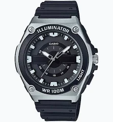
Tầm giá kế tiếp: chất liệu và tính năng tốt hơn
Khi nâng ngân sách, sản phẩm được đầu tư nhiều hơn về chất liệu (thép không gỉ 16L, dây da thật) và tính năng (bấm giờ thể thao Chronograph, chống nước 5–10 ATM). Chiếc đồng hồ không chỉ đẹp mà còn chịu được tác động bên ngoài tốt hơn khi dùng lâu dài.
Từ 3 đến 5 triệu đồng: bước đệm sang đồng hồ cơ và kính Sapphire
Ở mức giá này bạn bắt đầu chạm tới hai thứ tạo nên khác biệt: bộ máy cơ (Automatic) cơ bản và mặt kính Sapphire, loại kính cứng, khó trầy hơn kính thông thường. Hai loại đồng hồ cơ và đồng hồ pin khác nhau thế nào được so sánh ở bài Đồng hồ cơ hay đồng hồ pin: nên chọn loại nào.
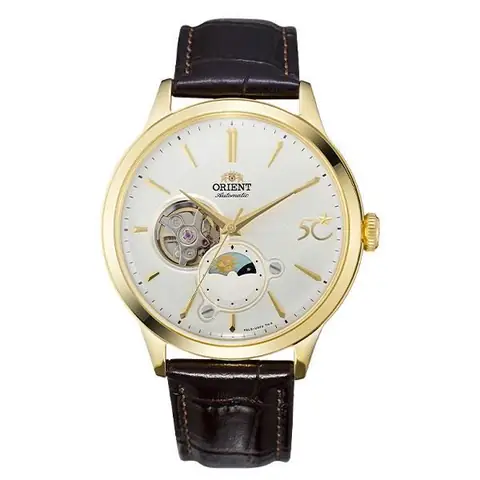
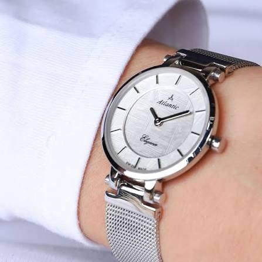
Từ 5 đến 10 triệu đồng: Automatic của Orient và Citizen
Phân khúc này là nơi đồng hồ Automatic của Orient và Citizen lên ngôi, thường đi kèm kính Sapphire và bộ máy cơ tinh giản. Giá bên dưới là mức tham khảo, có thể thay đổi theo đại lý và thời điểm.
Một số ví dụ của Orient
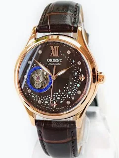
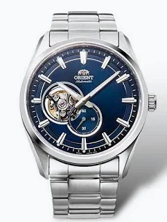
Một số ví dụ của Citizen
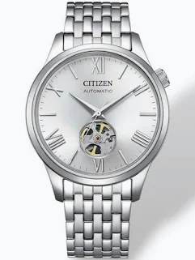
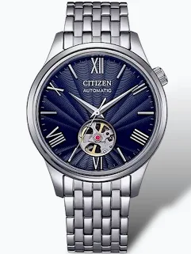
Cao cấp: từ hàng chục triệu đồng
Trên mức này là các mẫu chế tác cao cấp, giá từ hàng chục triệu đồng trở lên. Chỉ nên cân nhắc khi bạn đã rõ mình cần gì ở chiếc đồng hồ.
Tóm tắt nhanh
- Xác định nơi đeo nhiều nhất: công sở, thể thao hay hằng ngày.
- Đo cổ tay rồi chọn mặt khoảng 38–42 mm (cổ tay nhỏ 36–38 mm, cổ tay lớn đến 44–45 mm).
- Chọn vỏ, dây và màu hợp gu; dây kim loại có thể chỉnh mắt xích.
- Đặt ngân sách trước, rồi đeo thử trước khi mua nếu có thể.
Nguồn tham khảo
- Thế Giới Di Động: Nên chọn đồng hồ như thế nào
- Thế Giới Di Động: Thông tin ngành hàng đồng hồ, chọn theo giới tính và cổ tay
- Thế Giới Di Động: Thông tin ngành hàng đồng hồ, chọn theo ngân sách
- Thế Giới Di Động: Đồng hồ thời trang từ 3 đến 5 triệu
- CellphoneS: Cách chọn đồng hồ cho cổ tay nhỏ
- Quantrimang: Bí quyết chọn mua đồng hồ cơ